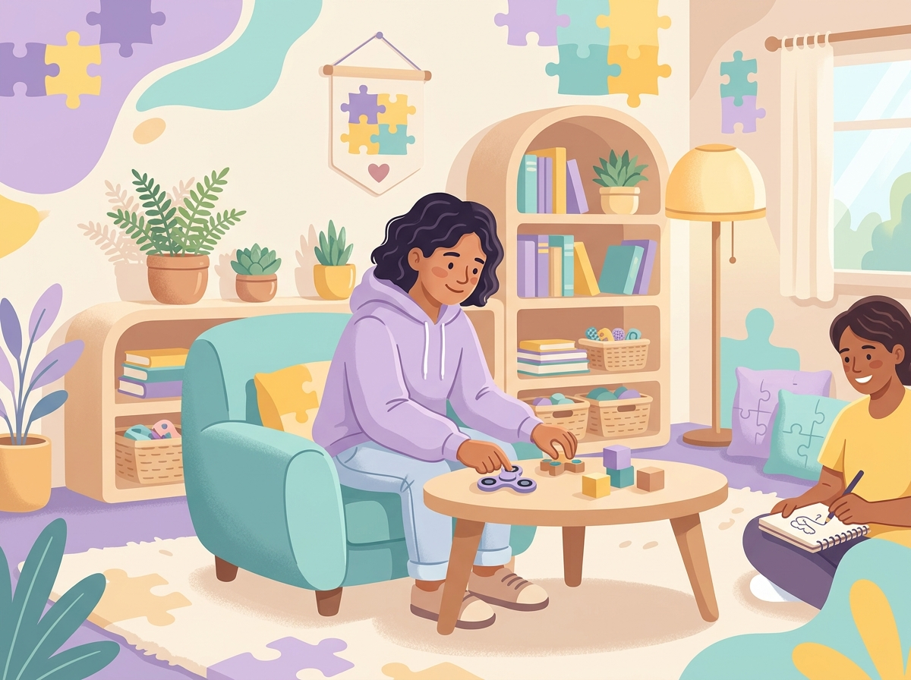

Sobre o TEA
Informações confiáveis e acessíveis sobre o Transtorno do Espectro Autista

O que é o TEA?
O Transtorno do Espectro Autista (TEA) é uma condição neurológica do desenvolvimento que afeta a forma como uma pessoa percebe o mundo, se comunica e interage socialmente.
O TEA é chamado de "espectro" porque se manifesta de formas muito diferentes em cada pessoa. Algumas podem precisar de mais apoio no dia a dia, enquanto outras vivem de forma bastante independente.
Importante: O TEA não é uma doença. É uma forma diferente e igualmente válida de existir no mundo.
Como o TEA se manifesta
O TEA pode se expressar de diversas maneiras. Aqui estão algumas características comuns, mas lembre-se: cada pessoa é única.
Comunicação Social
Pode haver dificuldade em iniciar ou manter conversas, interpretar linguagem corporal, expressões faciais ou compreender figuras de linguagem. Algumas pessoas podem preferir comunicação escrita.
Padrões e Rotinas
Muitas pessoas com TEA se sentem mais confortáveis com rotinas previsíveis e podem sentir desconforto com mudanças inesperadas. Isso traz segurança e estabilidade emocional.
Interesses Intensos
É comum ter interesses profundos e focados em temas específicos. Essa característica pode se transformar em grande talento e conhecimento especializado.
Sensibilidade Sensorial
Sons altos, luzes fortes, texturas ou cheiros específicos podem ser desconfortáveis. Da mesma forma, alguns estímulos podem ser muito agradáveis e reconfortantes.
Os três níveis do TEA
O TEA é classificado em três níveis de suporte, de acordo com a quantidade de apoio que a pessoa necessita.
Nível 1 — Leve
Necessita de algum apoio. Pode ter dificuldades em iniciar interações sociais e com flexibilidade de comportamento, mas geralmente consegue se comunicar verbalmente.
Suporte: Orientação e acompanhamento
Nível 2 — Moderado
Necessita de apoio substancial. Dificuldades mais evidentes na comunicação social e comportamentos repetitivos que podem interferir no funcionamento diário.
Suporte: Assistência regular
Nível 3 — Severo
Necessita de apoio muito substancial. Dificuldades graves na comunicação verbal e não verbal, além de comportamentos que limitam significativamente o funcionamento.
Suporte: Assistência contínua
Mitos e Fatos sobre o TEA
❌ Mito
"Pessoas com autismo não sentem emoções."
✅ Fato
Pessoas com TEA sentem emoções profundamente. A diferença pode estar na forma como as expressam ou as interpretam nos outros.
❌ Mito
"O autismo é causado por vacinas."
✅ Fato
Essa afirmação já foi completamente desmentida pela ciência. O TEA tem origem genética e neurológica, não está relacionado a vacinas.
❌ Mito
"Autismo é coisa de criança."
✅ Fato
O TEA é uma condição para a vida toda. Adultos também são diagnosticados e merecem apoio e compreensão.
❌ Mito
"Todas as pessoas com autismo são iguais."
✅ Fato
É chamado de espectro justamente porque cada pessoa é diferente. "Se você conheceu uma pessoa com autismo, conheceu UMA pessoa com autismo."
Direitos das Pessoas com TEA no Brasil
No Brasil, diversas leis garantem direitos específicos para pessoas com TEA.
Lei Berenice Piana (12.764/2012)
Institui a Política Nacional de Proteção dos Direitos da Pessoa com TEA. Garante acesso ao diagnóstico precoce, tratamento, terapias e educação.
Direito à Saúde
O SUS deve oferecer atendimento integral, incluindo terapias como fonoaudiologia, terapia ocupacional e psicologia.
Direito à Educação
Direito à matrícula em escola regular com acompanhante especializado quando necessário, sem cobrança adicional.
CIPTEA
Carteira de Identificação da Pessoa com TEA (Lei 13.977/2020) que garante atenção integral, prioridade no atendimento e identificação.
Tem dúvidas ou precisa de ajuda?
Entre em contato conosco. Estamos aqui para ouvir e ajudar.
Fale Conosco